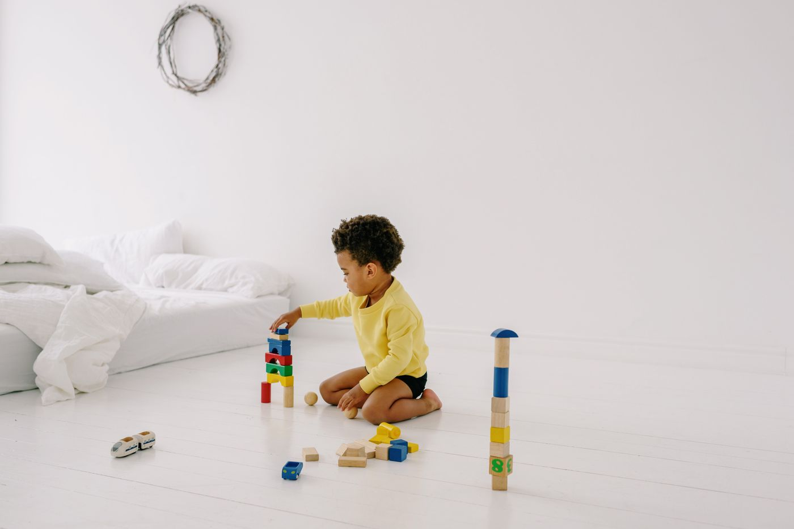

EL MUNDO TRIN1
Pequeños detalles.
Mucho amor.
Trin1 es una propuesta para bebés, niñas y niños de 0 a 5 años: desde la ropa de sus primeros días hasta los conjuntos, juegos y accesorios de la etapa preescolar.
Un espacio para encontrar ideas para sus primeros años, un regalo de bienvenida y los pequeños descubrimientos de cada día.
Conocer la propuesta